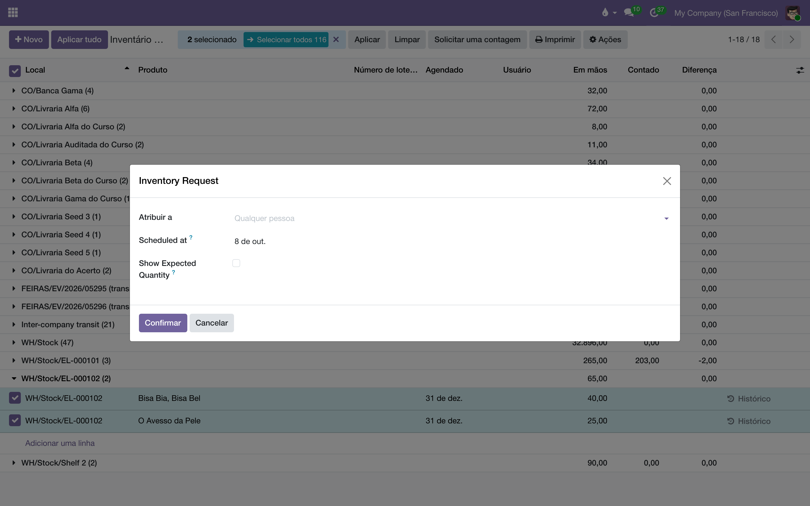
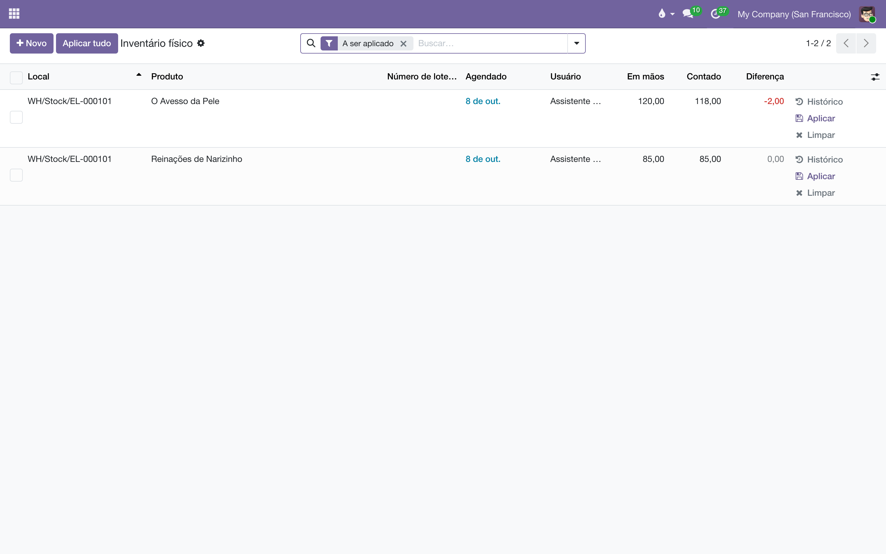
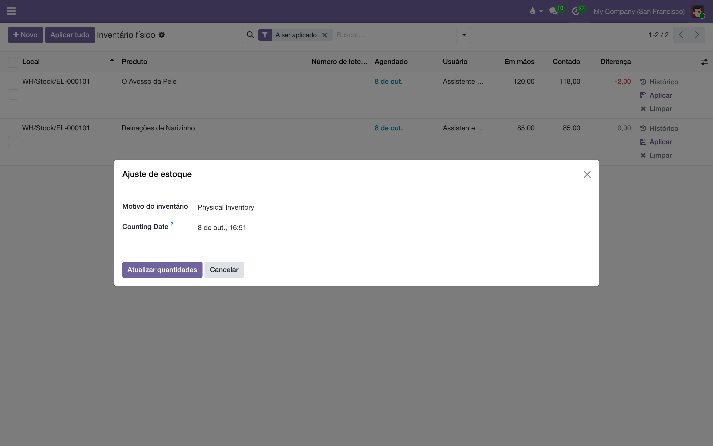

O inventário é feito em dois gestos, por duas pessoas. Quem está no depósito
conta: vai à prateleira e escreve quantos exemplares há de cada título. O gerente
aplica: revisa a diferença entre o contado e o que o sistema esperava, e só então a
quantidade em mãos muda. Este manual mostra as duas metades — e por que a segunda é só do gerente.
Contar não é ajustar
A tela Inventário‣Operações‣Inventário físico tem uma linha por
título em cada prateleira, e duas colunas que importam:
Coluna
O que é
Quem escreve
Em mãos
O que o sistema acha que há na prateleira — a soma de tudo o que entrou e saiu por
transferências validadas.
Ninguém. Ela muda por movimento.
Contado
O que a pessoa achou na prateleira. Fica em branco até alguém contar.
Quem conta: o assistente.
Diferença
Contado menos Em mãos. Negativa quando falta livro, positiva quando sobra.
Ninguém. É a conta das duas.
Preencher Contado não mexe no estoque: é um registro à espera. O que mexe é o
botão Aplicar, que transforma a diferença num movimento de ajuste:
a quantidade em mãos passa a ser a contada, e o livro que faltava vai para "Perda de inventário",
com data, prateleira e quem aplicou no histórico. Esse clique é o que muda o número que o
comercial, o acerto de consignação e o financeiro leem — e por isso é só do gerente.
Gesto
Assistente
Gerente
Pedir uma contagem (Solicitar uma contagem)
—
sim
Imprimir a Folha de contagem
sim
sim
Preencher Contado, linha a linha ou pela folha
sim
sim
Criar linha para livro que estava na prateleira e não na lista
sim
sim
Limpar a própria contagem antes de aplicada
sim
sim
Aplicar, Aplicar tudo, resolver um conflito
—
sim
Mudar Quantidade em mãos na ficha do livro
—
sim
Definir como 0, Realocar, apagar linha
—
sim
Como o gerente pede uma contagem
O inventário começa pelo gerente: ele escolhe o que se conta e quem conta. Pode ser uma
prateleira, um título em todas as prateleiras, ou o depósito inteiro — o Odoo não tem "abrir um
inventário"; tem linhas com uma data e um responsável.
Abra Inventário‣Operações‣Inventário físico. Agrupe por
Local e abra o grupo da prateleira, ou filtre pelo código dela
(EL-000196) ou pelo produto. Marque as linhas que vão ser contadas; para a
prateleira inteira, a caixa do cabeçalho.
Clique em Solicitar uma contagem. Em Atribuir a,
escolha quem vai contar; na data agendada (o campo ainda aparece em inglês, Scheduled at), o dia.
Deixe Atribuir a vazio para a contagem ficar aberta a qualquer um da equipe.
Confirmar. As linhas ganham a data e o nome, e passam a aparecer no
filtro Minhas contagens de quem foi escolhido.
Se a contagem for de papel, marque as linhas de novo e imprima a
Folha de contagem (menu Imprimir). Ela sai com
uma coluna em branco para escrever.

O grupo da prateleira aberto, as duas linhas marcadas, uma pessoa, uma data. A contagem
pedida aparece no Minhas contagens dela.
A janela traz também a opção de mostrar a quantidade esperada
(Show Expected Quantity) na folha impressa. Desligada, quem conta não vê o número do sistema — e conta de verdade em vez de conferir.
É uma escolha para a casa inteira, não para aquela contagem.
Como o assistente conta
Abra Inventário‣Operações‣Inventário físico. O filtro
Minhas contagens já vem ligado: só o que foi pedido a você. Para ver
o que está no prazo, acrescente A ser contado.
Vá prateleira por prateleira: agrupe por Local ou filtre pelo
código. A ordem crescente do código é a ordem do passeio no depósito.
Na prateleira, conte cada título e escreva o número na coluna Contado.
Zero também é contagem: um título que não está mais lá recebe 0, não fica em
branco.
Quando a contagem bate com o esperado, não precisa digitar: marque a linha e use
Ações‣Definir como a quantidade em mãos, que copia
Em mãos para Contado.
Achou na prateleira um livro que não está na lista? Clique em Novo, escolha
o Local (a prateleira), o Produto e escreva o
Contado. A linha nasce com Em mãos zero e a diferença positiva — e também
espera o gerente.
Clique em salvar. A coluna Diferença aparece, e a linha fica marcada como
pendente de aplicação. Errou? Limpar na própria linha apaga a sua contagem
e nada mais.
A tela de quem conta: Contado preenchido, Diferença
calculada, e nenhum Aplicar à vista. O estoque ainda não mudou.
Contagem não é mudança de prateleira. Se o livro está em outra
prateleira, não escreva 0 numa e o total na outra: isso vira uma perda numa e um achado na outra,
sem o movimento que explica. Mova-o pela
transferência interna ou pela
bipagem, e conte depois.
Como o gerente aplica
No Inventário físico, ligue o filtro A ser aplicado:
são as linhas que alguém contou e ainda não foram aplicadas, com a
Diferença à mostra e quem contou na coluna Usuário.
Revise as diferenças grandes antes de clicar. Uma diferença de dezenas num título que acabou de ser
separado costuma ser contagem antes da transferência, não livro sumido:
Histórico na linha mostra os últimos movimentos daquela prateleira.
Para aplicar uma linha, clique em Aplicar nela mesma. Para aplicar várias,
marque-as e clique em Aplicar no cabeçalho; para aplicar tudo o que está
contado na lista filtrada, Aplicar tudo.
Escreva o Motivo do inventário ("Inventário de outubro", "Contagem da
prateleira 196") e confirme em Atualizar quantidades. O motivo é o nome do
movimento no histórico de cada livro.

A mesma lista, vista pelo gerente: Aplicar em cada linha e
Aplicar tudo no cabeçalho.

O motivo vira o nome do movimento. Seis meses depois, é ele que explica por que o
número mudou.
Conflito. Se o livro se moveu depois de contado (uma entrega saiu da
prateleira entre a contagem e o clique), a linha fica em Conflitos e o
Aplicar abre uma caixa com duas saídas: Manter a quantidade
contada (o número da pessoa vale, e o movimento de depois é somado por cima) ou
Manter diferença (vale a diferença que ela encontrou, aplicada ao saldo de agora).
Na dúvida, peça uma recontagem.
Por que só o gerente aplica
No Odoo de fábrica, quem conta também aplica: o grupo "Inventário: Usuário" vê os botões
Aplicar e Aplicar tudo. O Liber fecha isso em dois
lugares, porque um botão escondido não fecha nada: a tela deixa de oferecer os botões ao assistente, e o
sistema recusa o ajuste por qualquer porta — a linha, o cabeçalho, a ficha do produto, uma chamada
de fora — quando quem pede não é administrador do Inventário. A contagem recusada não se perde:
fica na coluna Contado, esperando.
Se aparecer "Só um administrador do Inventário aplica um ajuste de estoque e muda a
quantidade em mãos. A sua contagem está guardada na coluna Contado: peça ao gerente do depósito que a
revise e aplique.", está tudo certo: você contou, e o resto é do gerente.
Quem pode o quê
Perfil
Conta
Pede contagem
Aplica
Em mãos na ficha
Logística, Assistente
sim
—
—
lê
Logística, Gerente e Direção
sim
sim
sim
edita
Comercial, Gerente
sim
—
—
lê
Demais usuários internos
—
—
—
lê, onde já liam estoque
Quando algo não sai como esperado
O que aparece
Por quê
O que fazer
"Só um administrador do Inventário aplica um ajuste de estoque…"
Você não é gerente da Logística. A contagem ficou gravada.
Avise o gerente: a linha está no filtro A ser aplicado dele.
A lista abre vazia para mim
O filtro Minhas contagens vem ligado, e ninguém lhe pediu contagem.
Tire o filtro para ver tudo, ou peça ao gerente que atribua a contagem a você.
Não vejo o botão Aplicar nem Aplicar tudo
São do gerente. A tela não os mostra a quem conta.
Nada a fazer: contar é o seu trabalho; o resto é dele.
"Quantidades já definidas"
Você usou Definir como a quantidade em mãos numa linha que já tinha
contagem.
Cancelar mantém a contagem que existia; Continuar
substitui pela quantidade em mãos.
A linha está em Conflitos
Houve movimento na prateleira depois da contagem.
O gerente decide na caixa de conflito, ou pede recontagem.
Marquei um produto como estocável e deu erro de acesso
Tornar estocável um produto que já teve movimentos zera o estoque dele — é um ajuste de
inventário, e passa pela mesma trava.
Peça ao gerente da Logística.
O que não fazer
Não use a contagem para mover livro de prateleira. Zero numa e o total na outra
são duas perdas disfarçadas. Mover é transferência interna ou bipagem.
Não deixe em branco o que não encontrou. Em branco é "não contei"; 0 é "contei e não
há". A diferença aparece no acerto de consignação e no financeiro.
Não conte prateleira com separação em andamento. O livro que está na caixa e ainda
não saiu no sistema vira conflito. Conte antes da separação ou depois da validação.
Não ajuste pela ficha do livro. O campo Quantidade em mãos
da ficha grava o ajuste na raiz do armazém (EL-VG/Stock), não na prateleira:
a prateleira continua com o número antigo e a raiz ganha o novo. Ajuste é no Inventário físico, na
linha da prateleira.
Não aplique sem motivo. "Inventário físico" é o que o Odoo escreve sozinho; "Inventário
de outubro, prateleiras 100–199" é o que alguém vai agradecer em março.
Dúvida sobre acesso ou empresa: fale com a administração do sistema.
Todo ajuste aplicado fica no histórico do livro, com data, prateleira, motivo e quem aplicou.